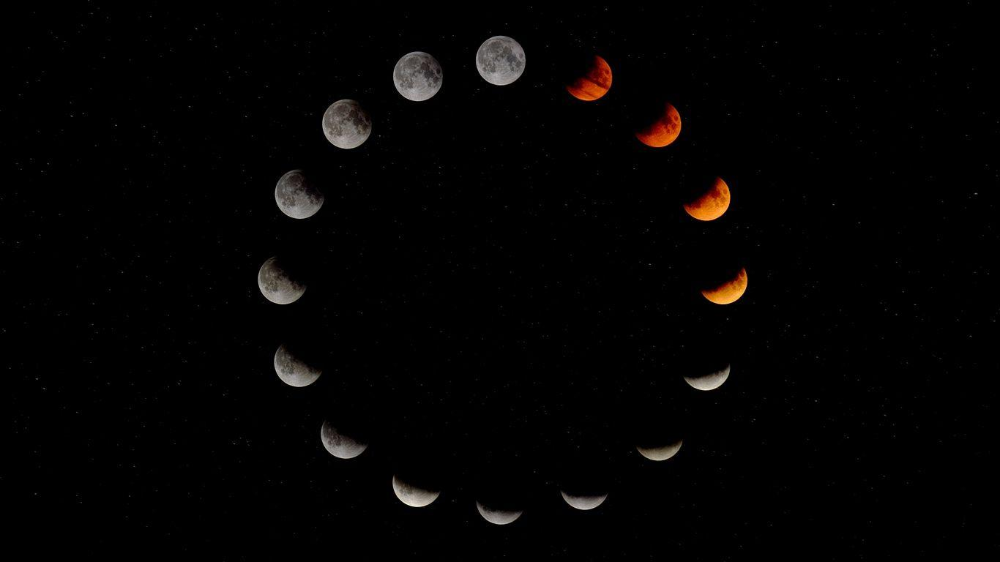
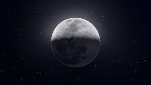

We love Moon
MOON

MOON
MOON

CHAPTER 1: FORMATION OF MOON
The Moon, Earth's only natural satellite, has fascinated humanity for millennia. It orbits our planet at an average distance of approximately 384,400 kilometers. Its influence on Earth's tides and the ancient cultural significance attributed to it make the Moon a subject of intrigue and study. Hello there, curious young minds! Today, we're going on an exciting journey to uncover the fascinating history of how our Moon was formed. How did it get there? Well, scientists have come up with some amazing theories, and we're going to explore them . Imagine a long, long time ago, when the Earth was still very young, there wasn't a moon in the sky. But something amazing happened to create our Moon, and scientists have a exciting theory about it called the "Giant Impact Theory." A long time ago, our planet Earth was a lot different than it is today. It was really hot and had lots of volcanic activity, and it was surrounded by a cloud of dust and rocks. One day, a super huge rock, much bigger than any rock you've ever seen, came crashing into the young Earth. This rock was probably as big as a planet or even bigger! Scientists call this rock "Theia". When Theia crashed into Earth, it was like a gigantic explosion! The impact was so powerful that it caused a lot of the Earth's outer layers and pieces of Theia to break off and shoot out into space. All those pieces that flew into space eventually came together and formed a new object, which we now call the Moon .So, the Moon was born from the debris of this giant impact .The collision was so big that even after thousands of years after the collision the surface of earth and moon was hot and filled with lava . Over a very, very long time, the Moon started to cool down and take on its round shape. It also got farther away from Earth and settled into orbit around our planet. Today, we see the Moon up in the night sky. It's not as hot or active as it was in the beginning . After cooling of moons surface a asteroid collision on moons south pole happened thus creating the SOUTH POLE-AITKEN BASIN which was further followed by heavy bombardment of other small asteroids which is also known as basin formation due to the asteroid bombardment there was lava all around the moons surface for few years , this phenomena is also known as MARE VOLCANISM . Over 3.8 billion years ago the moon faced another intermediate cratering which gave rise to the paths we see on moon today . And around 1 billion years ago formation of ray craters started and is still going on . Asteroid bombardment was a big part of the early history of the Moon and Earth, and it helped to shape the Moon into what it is today. It's like a cosmic adventure story that happened billions of years ago in the vastness of space!